Hi I'm Fabian Dinklage, a freelance data visualization and information designer based in Berlin. I design interfaces and craft interactive data-driven experiences to help you understand your data.
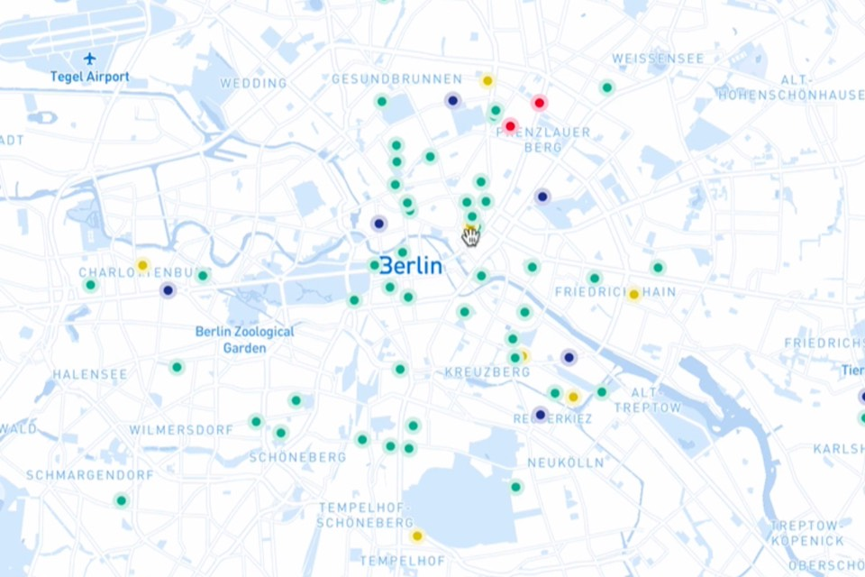
Educational Technology In Berlin: Innovative digital education services of Berlin made accessible for civil-society.
 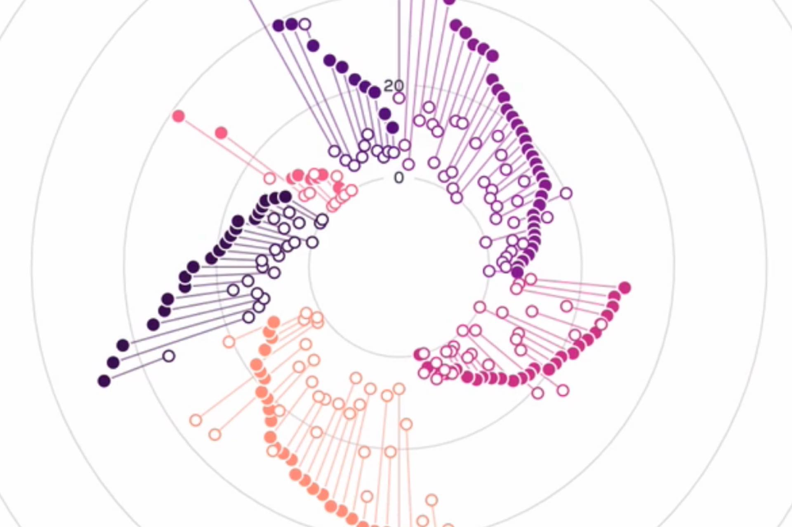
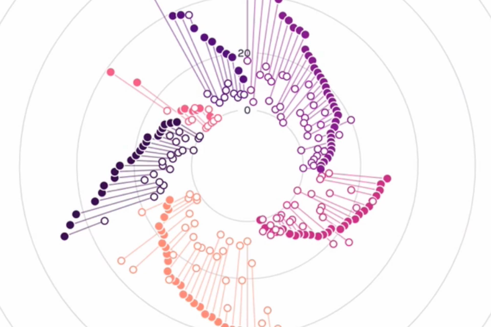Gender Inequality In Politics: How gender equal are political decisions made on a country level and what are underlying trends?
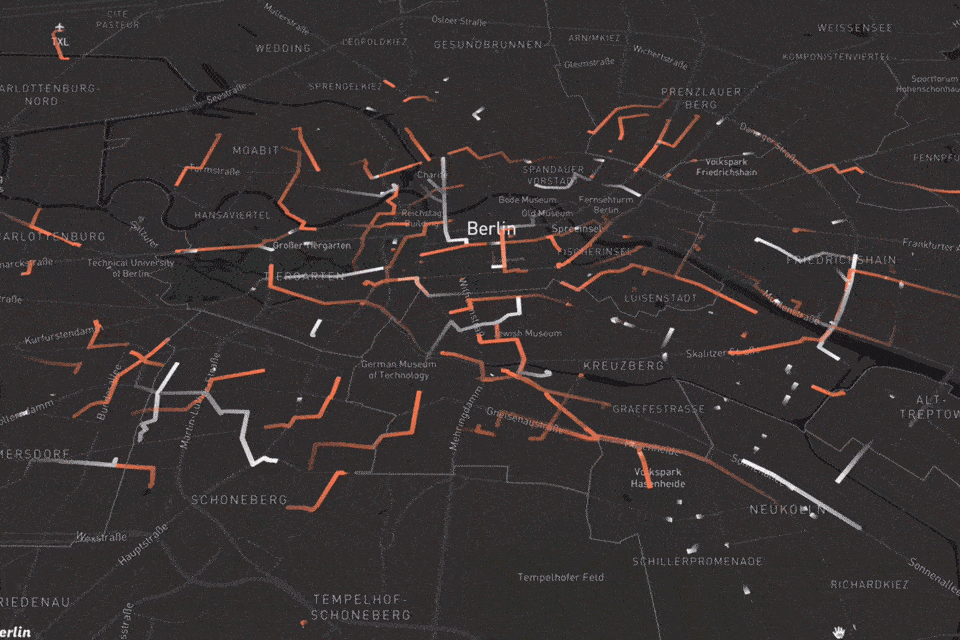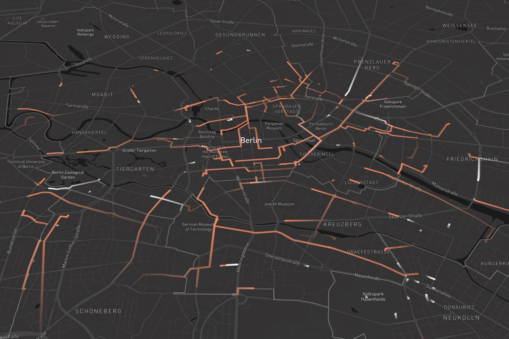
Shared Mobility Flows: Explore and analyse spatio-temporal patterns of Berlin's shared bike mobility providers.
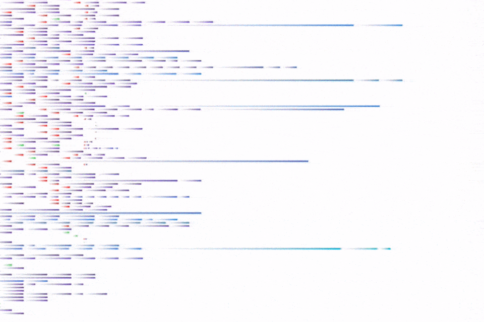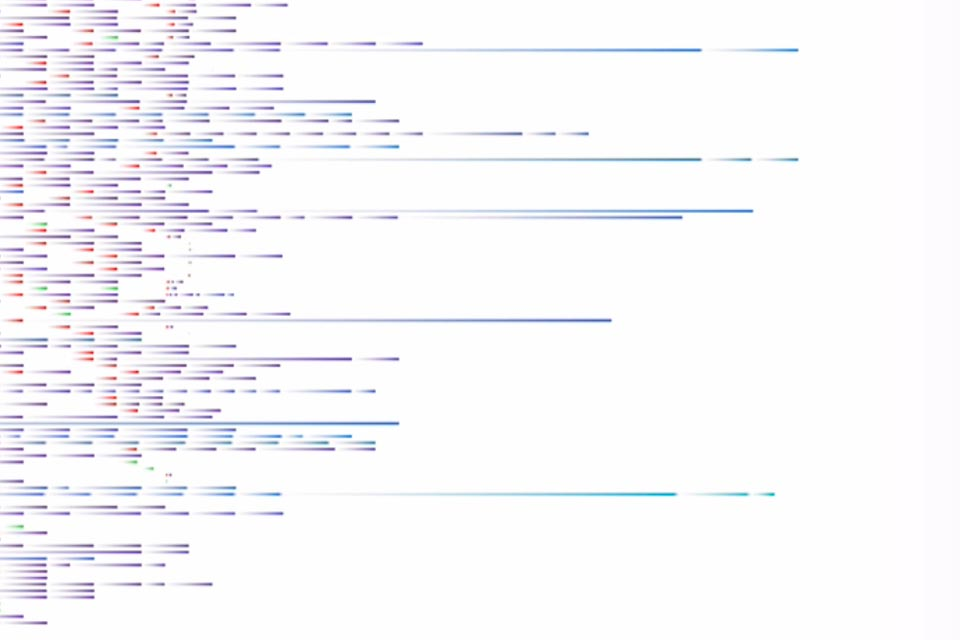
The Curricle Lens: Visualized, Annotaded, Connected: what should the course catalog look like in the 21st century?
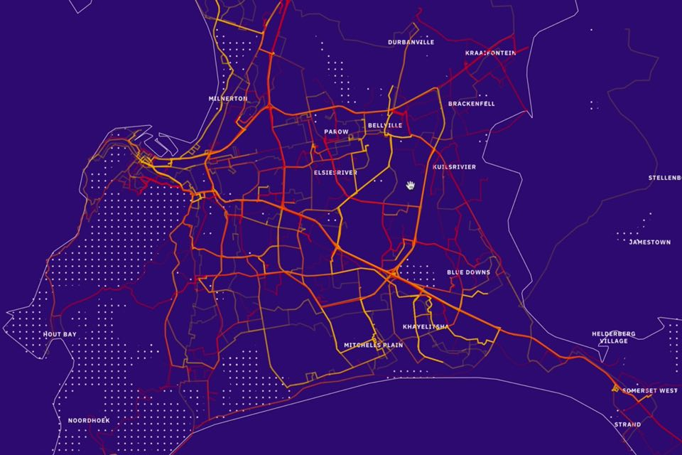
A City In Flux: Mapping socio-economic and mobility data of Cape Town.
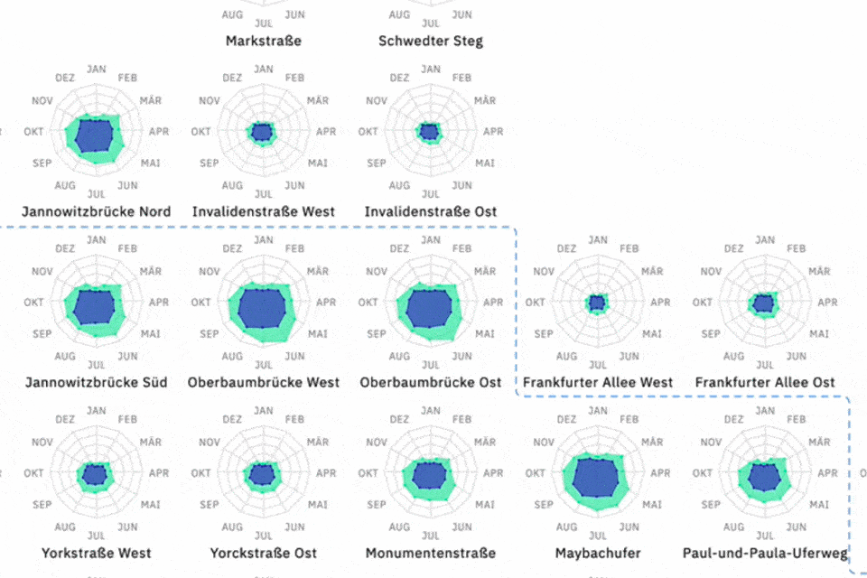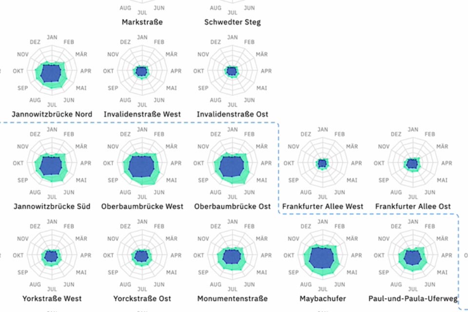
Rhythm Of The Road: Berlin's temporal cycling patterns visualized.
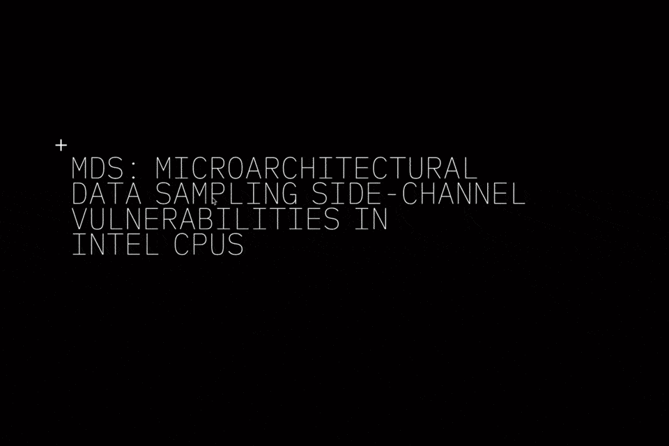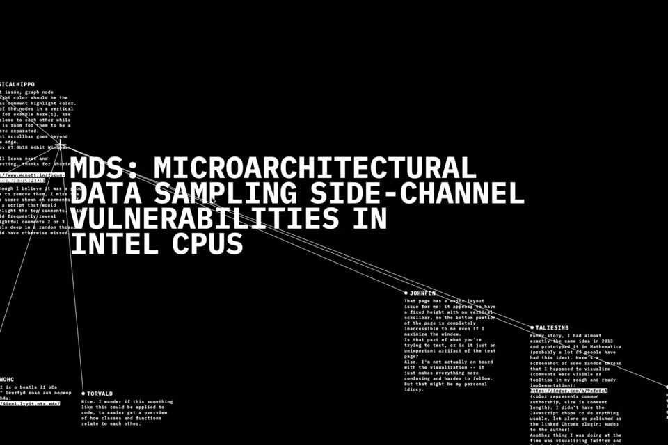
Retro Future Hacker News: Visualizing controversy and popularity of the news aggregator.
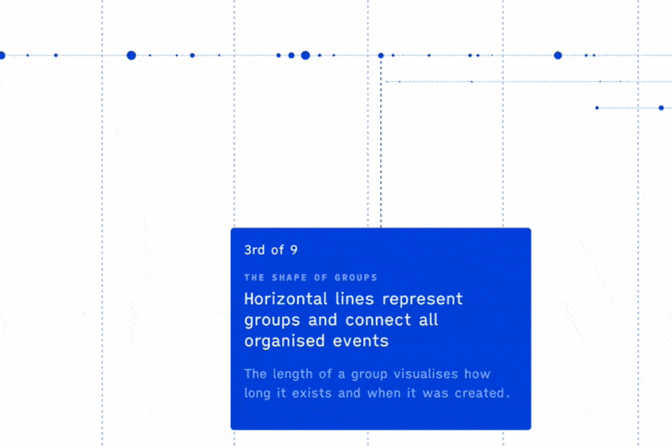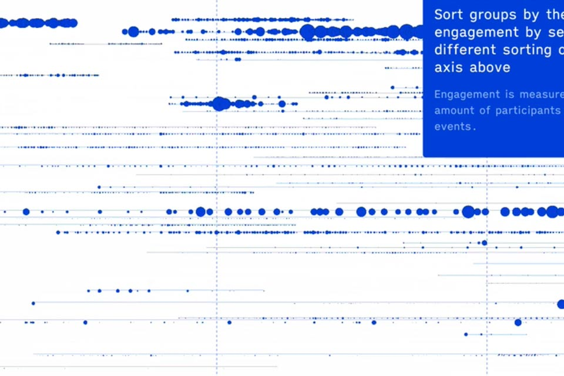
Invisible Ties Of Meetup: Ten years of meetup history visualized and annotated.
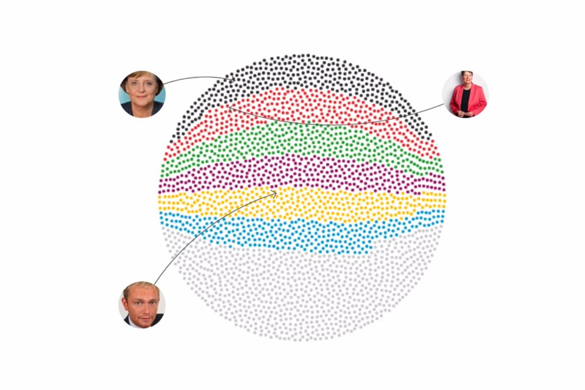
Election Candidates 2017: Who they are and what they are standing for?
Services
Data Analysis & Visualization
I analyse, transform, and organise your data to find underlying structures and patterns. I embrace the design process, prototype ideas with code and work closely with you to develop engaging data-driven experiences that are easy to use and provide valueable perspectives that engage to act. I'm interested in complex and data-dense problems and develop novel solutions to your most pressing questions.
Interface Design & Consultancy
I define concept directions, create wireframes and create consistent visual styles to provide a joyful user experience. I do ideation workshops with stakeholders to develop elaborated digital products. I review your product and find potential opportunities of improvement. Together we develop a strategy to develop your product further.
©2020, Fabian Dinklage